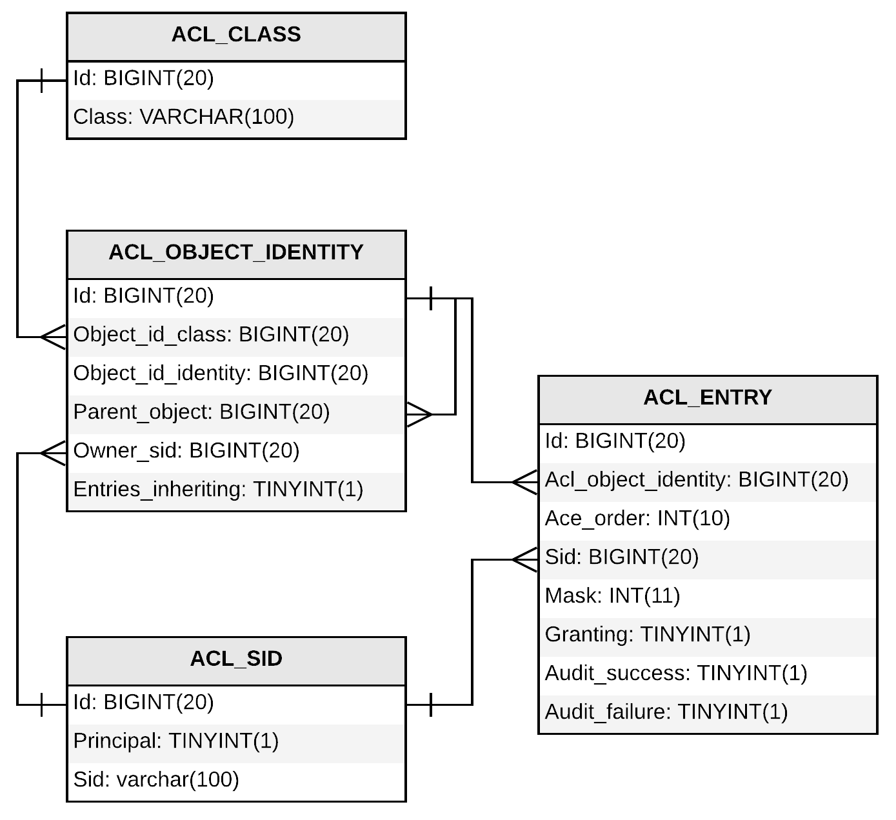

Фреймворк Spring Security
Модуль 03. Авторизация
Дворжецкий Юрий
3.1. Авторизация в Spring Security
Авторизация в Spring Security
- Авторизация — это процесс предоставления или проверки прав на определённые действия в системе
- Авторизация возможно только после аутентификации
- В мире, в действительности, есть несколько подходов: RBAC, ABAC, ACL и т.д.
- Так или иначе, со Spring Security можно реализовать бОльшую часть в данных подходах
Виды авторизации в Spring Security
- авторизация на основе URL;
- авторизация на основе вызовов методов;
- авторизация на основе доменных сущностей (ACL).
Абстракции для авторизации
- Вне зависимости от способа авторизации, в авторизации задействованы одни и те же абстракции
- Авторизация в Spring Security основана на голосовании.
Упражнение
- Сейчас я буду называть абстракции, а Вы будете их смотреть вместе со мной
- Ctrl + N в IntelliJ IDEA
Основные абстракции

Основные абстракции
- GrantedAuthority и SimpleGrantedAuthority
- Атомарное «разрешение» для пользователя
- В действительности, просто обёртка над строчкой
- Может быть специального вида ROLE_ADMIN для роли, а может быть просто CAN_WRITE_COMPANY
- Нет иерархии (хотя их можно сделать)
- Что эта роль означает определяется нашими правилами
Основные абстракции
- AbstractSecurityInterceptor
- Вызывает AccessDecisionManager
- Собственно есть две реализации: FilterSecurityInterceptor и MethodSecurityInterceptor
Основные абстракции
- AccessDecisionManager
- Основной интерфейс, принимающий решение о доступе к объекту
- В действительности организует голосование между AccessDecisionVoter
Основные абстракции
- AccessDecisionManager
- Есть три реализации AffirmativeBased (по умолчанию!), UnanimousBased, ConsensusBased
- Когда голосует один AccessDecisionVoter (на это направлены все варианты современного DSL), то они эквивалентны
- Но всё равно можно сделать так, чтобы вызывалось несколько голосующих :)
Основные абстракции
- AccessDecisionVoter
- Собственно, сам голосующий.
- Существует несколько реализаций, в зависимости от типа проверки
Реализации AccessDecisionVoter
- RoleVoter — голосующий на основании ролей
- Authenticated — голосующий на основании ролей
- WebExpressionVoter — голосующий на основании веб-выражения
Реализации AccessDecisionVoter
- Почти всё в SecurityConfig сделано таким образом, чтобы получался ровно один Voter
- При сложном выражении образуется WebExpressionVoter, а не комбинация конфигурации разных
- Но при этом всё равно можно сделать так, чтобы голосовали несколько Voters
- Помним, что по умолчанию AffirmativeBased, а не UnanimousBased!
Основные абстракции
Вопросы?
3.2. Авторизация на основе URL
Как это всё работает (Web)

ДЕМО
- Настройка различных Voters средствами DSL
Вопросы?
Лабораторная №6
- Настройте авторизацию на основе URL
- Необходима авторизация пользователей к CompanyController, UserController и InfoController.
- Разделение можно также делать по HTTP-методам
- Проверьте доступ к данным URL и HTTP-методам
- Число 6 в чат, как сделаете.
Вопросы?
3.3. Авторизация на основе вызовов методов
Method-based авторизация
Spring Security поддерживает три вида аннотаций для управления доступом на основе методов:
- Аннотация @Secured (самая простая)
- Аннотации JSR-250
- Pre-Post аннотации (самый мощный механизм)
Method-based авторизация
@EnableGlobalMethodSecurity(
prePostEnabled = true,
jsr250Enabled = true,
securedEnabled = true
)
public class MethodSecurityConfig {
}
@Secured
@Service
public class UserService {
@Secured("ROLE_ADMIN")
public UserDto create(UserDto userDto) {
// ...
}
}
@PreAuthorize
@Service
public class CompanyService {
@PreAuthorize("hasAuthority('ROLE_ADMIN')")
public List<CompanyDto> getAll() {
// ...
}
}
@PreAuthorize
@Service
public class CompanyService {
@PreAuthorize("hasPermission(#company, 'WRITE')")
public void save(Company company) {
// ...
}
}
@PostAuthorize
@Service
public class CompanyService {
@PostAuthorize("hasPermission(returnObject, 'READ')")
public Company getMainCompany() {
// ...
}
}
@PreFilter
@Service
public class CompanyService {
@PreFilter(value = "hasPermission(filterObject, 'READ')",
filterTarget = "companies")
public void delete(List<Company> companies) {
// ...
}
}
@PostFilter
@Service
public class CompanyService {
@PostFilter("hasPermission(filterObject, 'READ')")
public List<Company> getAll() {
// ...
}
}
Вопросы?
Лабораторная №7
- Настройте авторизацию на основе методов в сервисах или репозиториях.
- Число 7 в чат, как сделаете.
Вопросы?
3.3. Авторизация на основе доменных сущностей
ACL
- Spring Security поддерживает авторизацию на основе доменных сущностей.
- Условно «Пользователь Иванов не может работать с компанией ООО "Ромашка"»
- Для этого задействовано множество механизмов, включая кэши и т.д.
- Это дополнительный модуль spring-security-acl
ДЕМО
- ACL на примере прав к папкам Windows.
Схема БД

Упражнение
- Сейчас я буду называть абстракции, а Вы будете их смотреть вместе со мной
- Ctrl + N в IntelliJ IDEA
Основные абстракции
- Acl
- Собственно сам список
- Состоит из AccessControlEntry (ACE)
Основные абстракции
- MutableAcl
- То же самое, только модифицируемый, для сохранения
Основные абстракции
- AccessControlEntry
- Запись в ACL
Основные абстракции
- Permission
- Атомарное разрешение
- В действительности Вы можете вводить свои собственные, но в реальной жизни хватает этих
Основные абстракции
- Sid
- Security ID
- Может означать как конкретного пользователя, так и роль
Основные абстракции
- ObjectIdentity
- ID объекта
- Может не соответствовать реальному объекту и ID
- Вся магия заключается в определении данного ID
Основные абстракции
- AclService, MutableAclService
- Сервисы для чтения и сохранения ACL в БД
Схема БД
ДЕМО
- Реализация ACL
Вопросы?
Лабораторная №8
- Добавьте ACL в Ваше приложение
- Не забудьте добавить сохранение ACL при сохранении компании
- Число 8 в чат, как сделаете.